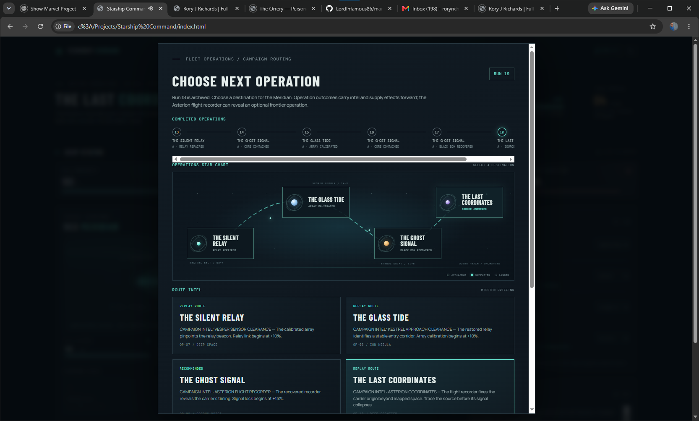

✳ Starship Command / Field Tour
A campaign in four moments
01 / 04

01 / Campaign routing
Choose your next operation
Review what the crew has completed, read the route intel, and select an available destination before launching.
UES MERIDIAN · SECTOR MAP
A short visual tour assembled from in-game screenshots. The tour advances automatically; use the controls or arrow keys to explore at your own pace.